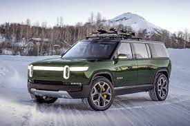
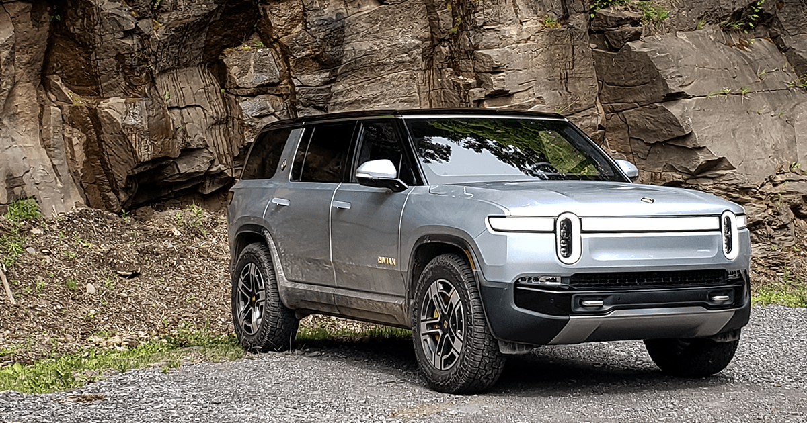
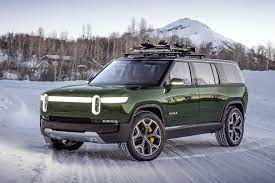
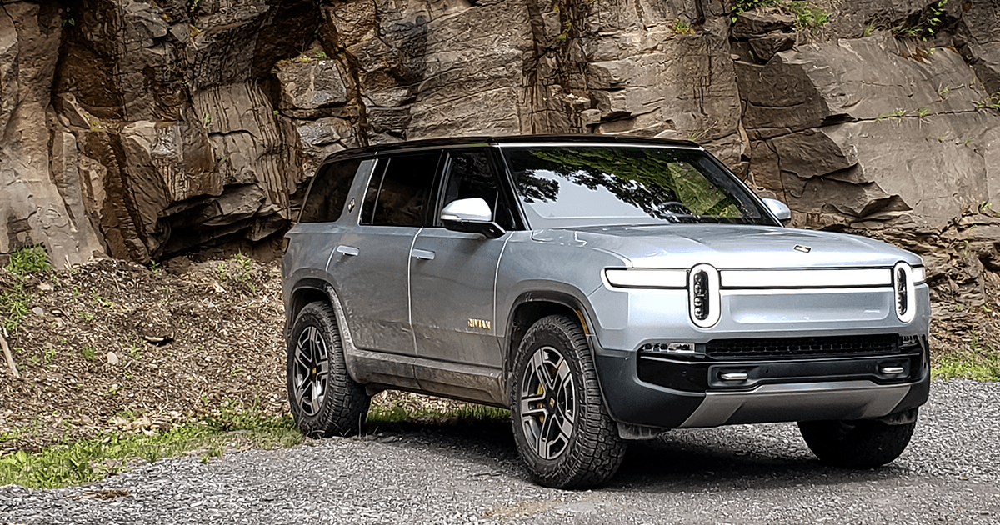
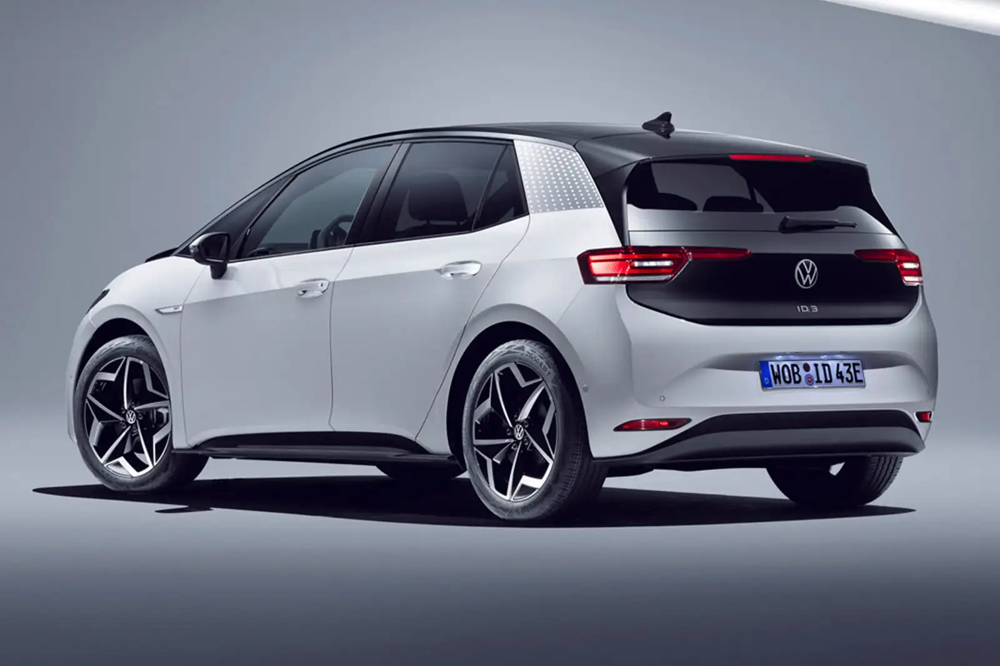
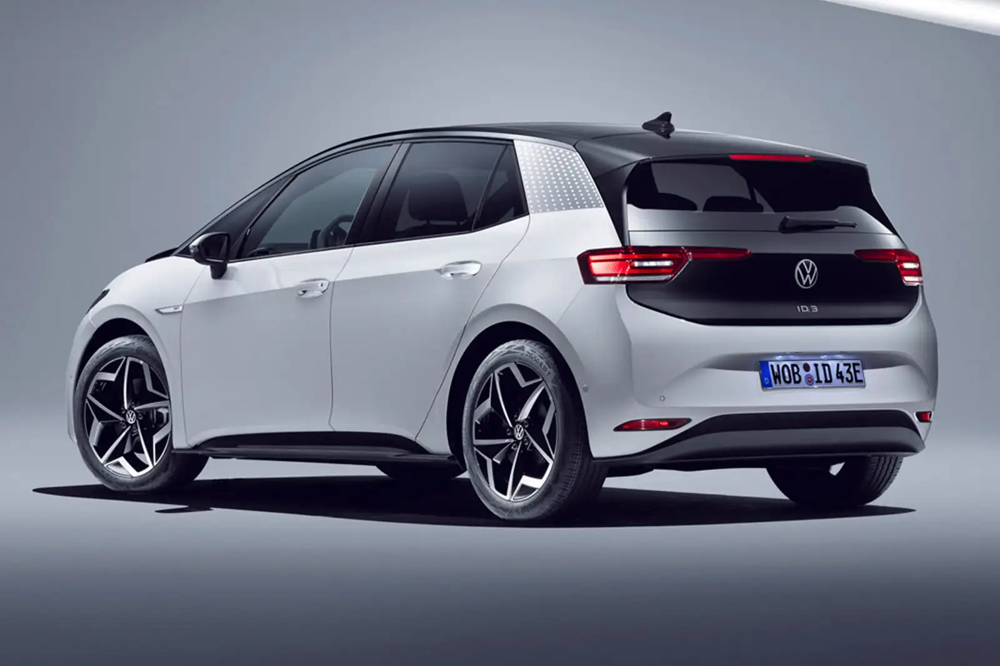

WELCOME TO CAR FUTURE
The future of cars a pron to be electric and many vary from the worlds smallest suv to the new tesla semi truck or in the middle like the rivian r1s suv to the rivian r1t pickup truck. The point is the world is going eev (efficient electric vehichle) so it's time to choose which e car is good for you.
are you a suv car fan? Then the Rivian rls will suit you
 

Rivian's three-row R1S gives mid-size SUV buyers an electric option that's just as rugged and capable as a Jeep or a Land Rover. The 2022 R1S SUV is the second production model from Rivian, and is one of few three-row EVs, making it an appealing option for families who want to go electric. In it, you can see an R1T test mule wading through water at some considerable speed. Based on the video, it looks like the 2022 Rivian R1T will be able to wade around 3-5 feet of water without issue. In all likelihood, it’s the one weakness of an EV powertrain that lets the R1T wade with such ease. An adjustable air suspension is standard and can raise the R1S up to unlock a maximum of 15.0 inches of ground clearance. The R1S is sold directly to consumers, although Rivian has set up a network of service centers to handle necessary maintenance and repairs.
rivian rls


Rivian's three-row R1S gives mid-size SUV buyers an electric option that's just as rugged and capable as a Jeep or a Land Rover. The 2022 R1S SUV is the second production model from Rivian, and is one of few three-row EVs, making it an appealing option for families who want to go electric. In it, you can see an R1T test mule wading through water at some considerable speed. Based on the video, it looks like the 2022 Rivian R1T will be able to wade around 3-5 feet of water without issue. In all likelihood, it’s the one weakness of an EV powertrain that lets the R1T wade with such ease. An adjustable air suspension is standard and can raise the R1S up to unlock a maximum of 15.0 inches of ground clearance. The R1S is sold directly to consumers, although Rivian has set up a network of service centers to handle necessary maintenance and repairs.
rivian rls
Are you a sporty saloon car fan? Then the audi etron gt will suit you.


 The Audi e-tron GT is a battery electric executive car produced by Audi since late 2020 as part of the e-tron battery electric sub-brand, and the third fully electric car model, after e-tron and e-tron Sportback SUVs. Based on the J1 platform shared with the Porsche Taycan, the car went on sale in March 2021. The e-tron is a range of fully electric Audi vehicles. Unlike petrol or diesel-powered engines, fully electric cars use electric battery powered motors so you can drive C0₂-free. The battery can then be recharged in a number of convenient ways, at home or on the go. It’s everything you want from your Audi. With all the advantages of electric. Audi e-tron GTs offer a top speed range between 0mph and 152mph, depending on the version. How much does the Audi e-tron GT cost? Audi e-tron GT on-the-road prices RRP from £84,000 and rises to around £110,100, depending on the version.
audi etron gt
The Audi e-tron GT is a battery electric executive car produced by Audi since late 2020 as part of the e-tron battery electric sub-brand, and the third fully electric car model, after e-tron and e-tron Sportback SUVs. Based on the J1 platform shared with the Porsche Taycan, the car went on sale in March 2021. The e-tron is a range of fully electric Audi vehicles. Unlike petrol or diesel-powered engines, fully electric cars use electric battery powered motors so you can drive C0₂-free. The battery can then be recharged in a number of convenient ways, at home or on the go. It’s everything you want from your Audi. With all the advantages of electric. Audi e-tron GTs offer a top speed range between 0mph and 152mph, depending on the version. How much does the Audi e-tron GT cost? Audi e-tron GT on-the-road prices RRP from £84,000 and rises to around £110,100, depending on the version.
audi etron gt
Are you a family hatchback fan? Then the volkswagon ID.3 will suit you.

 
The Volkswagen ID.3 is a battery electric small family car (C-segment) produced by Volkswagen since 2019. It is the first production car to utilize the MEB platform, and the first model of the ID. series. It was unveiled on 9 September 2019 at the Frankfurt Motor Show, after being first shown as the I.D. concept car at the 2016 Paris Motor Show. Deliveries to retail customers began in Germany in September 2020. The ID.3 was previewed as a concept car called the Volkswagen I.D., first shown at the 2016 Paris Motor Show. It was the first concept model of the new all-electric I.D. sub-brand. According to Volkswagen, the I.D. featured innovations such as virtual wing mirrors (using video cameras), "chocolate bar" battery design, and retractable LiDAR sensors used for autonomous driving, not all of which made it to the production version. In May 2019, Volkswagen confirmed the production model based on this prototype was named Volkswagen ID.3, instead of the rumoured I.D. Neo name, and officially presented at the International Motor Show Germany in September 2019. The ID.3 is one of five new Volkswagen models based on the MEB platform. Smaller cars bearing the ID.1 and ID.2 names are expected, and bigger models will range from ID.4 to ID.9. Volkswagen has also applied for trademark protection of an additional "X", supposedly for a SUV. Reservations (€1000) for the launch model of the ID.3 started on the 8 May 2019, which were set to be delivered in midyear 2020, whereas the base model, expected to cost under €30,000, will be delivered in 2021.[needs update] Volkswagen named high expected demand as a reason. It received 10,000 buyer reservations within 24 hours after pre-orders opened and 30,000 before the unveiling at IAA 2019. Retail deliveries began in Germany in September 2020. The production version of the ID.3 was unveiled on 9 September 2019 at the Frankfurt Motor Show (IAA), along with the new Volkswagen logo and branding. The cars are assembled at Volkswagen's Zwickau factory, where the company expects the full plant capacity (330,000 cars per year) to produce electric cars based on the MEB platform for the Volkswagen Group from 2021 onwards. In 2021, an additional ID.3 production line was started at the Transparent Factory in Dresden. In 2021, Volkswagen stated they were considering a convertible version, releasing 2 design illustrations.
volkswagon

The Volkswagen ID.3 is a battery electric small family car (C-segment) produced by Volkswagen since 2019. It is the first production car to utilize the MEB platform, and the first model of the ID. series. It was unveiled on 9 September 2019 at the Frankfurt Motor Show, after being first shown as the I.D. concept car at the 2016 Paris Motor Show. Deliveries to retail customers began in Germany in September 2020. The ID.3 was previewed as a concept car called the Volkswagen I.D., first shown at the 2016 Paris Motor Show. It was the first concept model of the new all-electric I.D. sub-brand. According to Volkswagen, the I.D. featured innovations such as virtual wing mirrors (using video cameras), "chocolate bar" battery design, and retractable LiDAR sensors used for autonomous driving, not all of which made it to the production version. In May 2019, Volkswagen confirmed the production model based on this prototype was named Volkswagen ID.3, instead of the rumoured I.D. Neo name, and officially presented at the International Motor Show Germany in September 2019. The ID.3 is one of five new Volkswagen models based on the MEB platform. Smaller cars bearing the ID.1 and ID.2 names are expected, and bigger models will range from ID.4 to ID.9. Volkswagen has also applied for trademark protection of an additional "X", supposedly for a SUV. Reservations (€1000) for the launch model of the ID.3 started on the 8 May 2019, which were set to be delivered in midyear 2020, whereas the base model, expected to cost under €30,000, will be delivered in 2021.[needs update] Volkswagen named high expected demand as a reason. It received 10,000 buyer reservations within 24 hours after pre-orders opened and 30,000 before the unveiling at IAA 2019. Retail deliveries began in Germany in September 2020. The production version of the ID.3 was unveiled on 9 September 2019 at the Frankfurt Motor Show (IAA), along with the new Volkswagen logo and branding. The cars are assembled at Volkswagen's Zwickau factory, where the company expects the full plant capacity (330,000 cars per year) to produce electric cars based on the MEB platform for the Volkswagen Group from 2021 onwards. In 2021, an additional ID.3 production line was started at the Transparent Factory in Dresden. In 2021, Volkswagen stated they were considering a convertible version, releasing 2 design illustrations.
volkswagon
Are you a city car fan? Then the Citron Ami suit you.